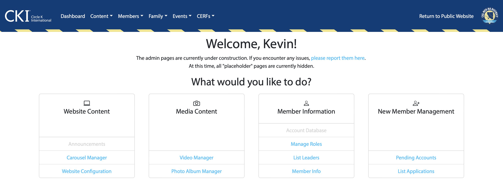

Change Thru Games Website (Circle K International at UC Irvine)
Change Thru Games (CTG) was an annual gaming charity fundraiser hosted by Circle K at UC Irvine (CKI at UCI). The 9th edition of CTG occurred on November 19, 2022, with proceeds benefiting the Prevent Cancer Foundation.
I served as the marketing chair for this edition of CTG. Since I had experience designing my personal website, Andy Chen, the CTG chair, asked if I was able to design the CTG website, and I accepted.
The previous CTG website was based on PHP and not fully adaptive and responsive, meaning that some aspects of it were not designed with mobile devices in mind. In addition, the main UCI Circle K website was converted from PHP to Angular, meaning it would be extremely difficult to integrate the existing CTG site to the main website.
In order to make the website adaptive and responsive while also adapting to the main website's new framework, I started over almost completely from scratch using Bootstrap, using the general layout of the old website as a starting point. The result is an eye-popping website that both effectively advertises the event and works on mobile devices.
The 10th edition of CTG occurred on November 18, 2023, with proceeds benefiting the American Heart Association. As the marketing chair for the 10th iteration of CTG, I was once again tasked with designing the CTG website. I kept the layout of the website the same while updating branding elements to fit the new "retro gaming" theme.
While the site is still up, CKI at UCI no longer hosts CTG and the website is no longer maintained. The SSL certificate is expired.
Administration Panel UI Upgrade (Circle K International at UC Irvine)

The administration panel of the Circle K at UC Irvine website is used by executive/appointed board members and family heads to perform various administrative duties, including (but not limited to) creating club events, managing user accounts, designing "family" pages, and more.
When the CKI AT UCI website was converted from a PHP-based site to an Angular-based site, the user interface of the admin panel was objectively ugly and not mobile friendly. The biggest issue was the side navigation panel; its fixed width meant that it took up the vast majority of screen real estate on mobile devices.
In order to make the admin panel adaptive and responsive, I replaced the old side navigation menu with a modified Bootstrap navbar; modifications include the addition of district and international Circle K branding. This allowed page content to be easily viewed on mobile devices. Other minor modifications include adjusting webpage padding and incorperating Circle K International branding elements, such as the Myriad Pro font.
This project is not accessible to the public.
ZotGuessr
ZotGuessr: it's like GeoGuessr, but with locations at and around the UCI campus and fun facts. UCI and its surrounding area is really nice, but some locations might be a bit hard to locate (even with UCI's circular design). ZotGuessr allows users to guess the location of a campus landmark based on Google Street View.
ZotGuessr won the "Most Polished Game" and 2nd place "Best Use of Google Cloud" awards at HackUCI 2022. I worked on this project along with Advay Anand, Douglas Hong, Eric Huang, and Davin Singh as part of HackUCI 2022. I did some consulting on the user interface and worked on the project's Devpost page.
In my personal opinion, the official schedules Anteater Express provides are awful and are not very useful due to their lack of specific departure times. During my time at Anteater Express, I've designed my own schedule documents, which includes every trip and departure times from each timed stop for each route. Just for fun, I've also created a (now infamous) page where I talk about specific buses in the Anteater Express fleet.
These are simple websites built as part of my French classes at UCI.
Restaurant Francophone, made for French 1B, advertises a fictional Vietnamese restaurant in Vietnam, which was formerly colonized by the French.
Visite Île-de-France, made for French 1C, advertises the Île-de-France region of France, home of Paris.
Personal Website
This website was originally created as part of TechX, a program hosted by the California-Nevada-Hawaii district of Circle K International in Summer 2021 that aimed to expose members to various forms of technology. This is an HTML-based website incorperating Bootstrap version 5.3.7, an open-source CSS framework that easily makes this website responsive.
This website is hosted on GitHub Pages. As of August 2023, bus and plane pictures are hosted on DigitalOcean Spaces, which has helped to significantly decrease build and deployment times of the website. The domain is provided by Squarespace (formerly Google Domains), and DigitalOcean's nameservers are used.